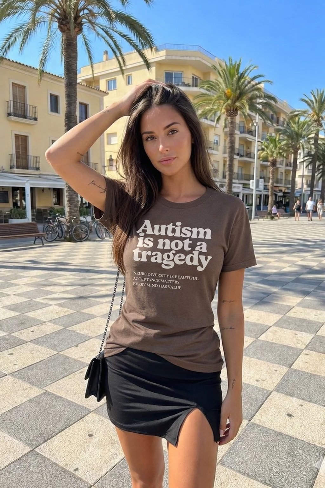
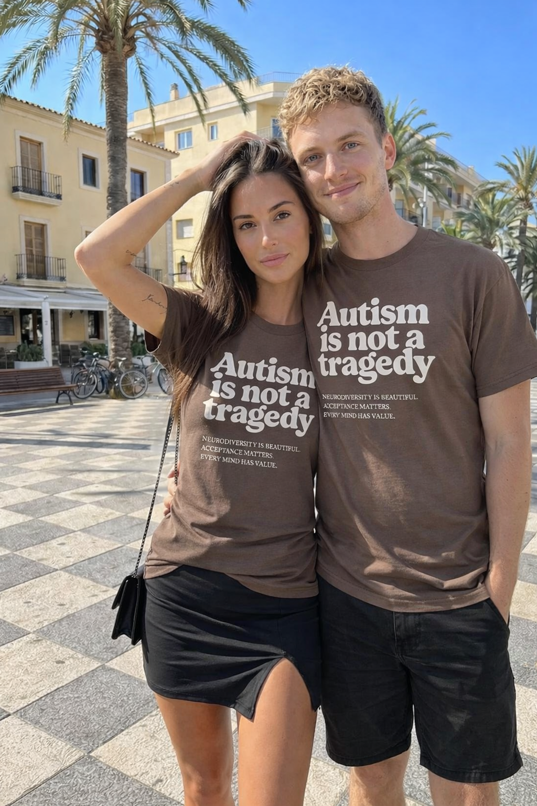
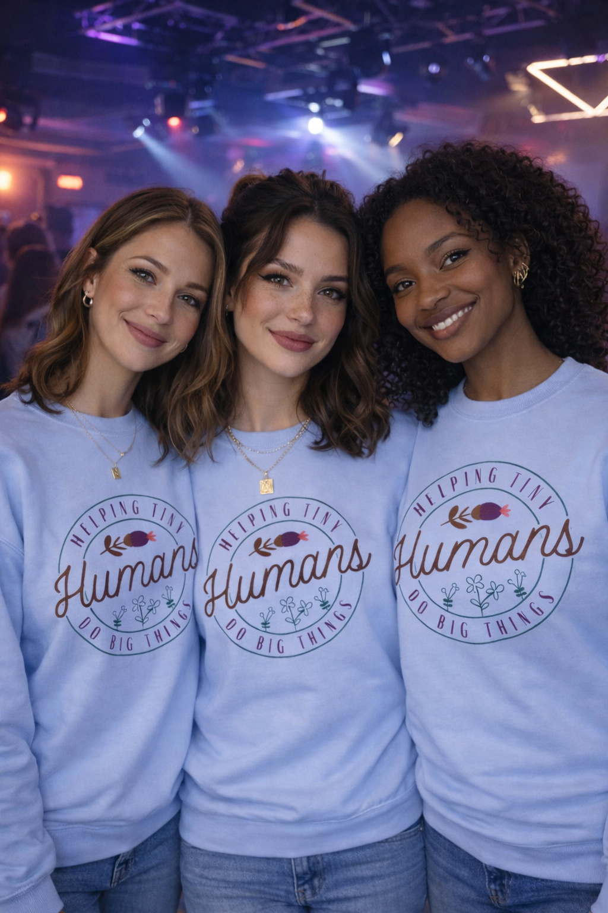
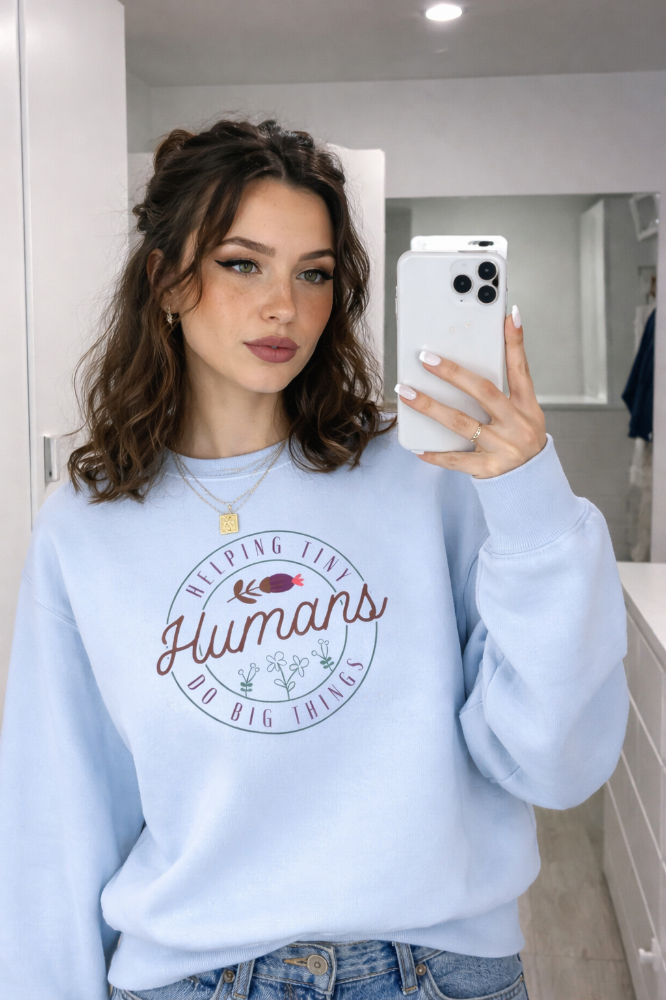

Daily Bloom - Facebook Feed Preview
Facebook Ad Copy Drafts | Click "See more" to expand each draft
SYSTEMIC INDICTMENTS (Drafts 2, 5)
Draft 2
Attack Exhaustion
♾
···
Stop fighting for inclusion.
Not because it doesn't matter.
Because fighting implies it's something to be earned.
You've been in IEP meetings. Advocacy calls. Email chains that go nowhere.
Begging for accommodations that should've been automatic.
Explaining, again, why your child deserves the same access as everyone else.
That's exhausting.
And it's backwards.
Inclusion shouldn't require a permission slip.
It shouldn't need a diagnosis code.
It shouldn't depend on whether the teacher "gets it" this year.
There are two versions of inclusion.
One you have to fight for.
The other assumes you were always supposed to be there.
Four words changed everything for us.
Autism is not a tragedy.
Not a problem to solve.
Not a condition to overcome.
Not something that needs to be earned out of.
Just a different way of being human that was never supposed to require a permission slip.
This shirt says what the IEP meetings won't.
No negotiation.
No asterisks.
Just the truth that should've been obvious from the start.
Wear the statement with 12,000 Bloomers: {url}
See more

mydailybloom.com
Stop Fighting. Start Stating.
Join 12,000 Bloomers who stopped apologizing
2.4K
Draft 5
Attack the Goal
♾
···
Inclusion doesn't work.
At least, not the version they've been selling.
The kind where your kid is "included" but still expected to mask.
Where they're in the room but not actually welcome.
Where "we include everyone" means "we tolerate difference as long as it's quiet."
That's not inclusion.
That's attendance.
Real inclusion doesn't ask your child to perform neurotypical to earn their place.
Real inclusion doesn't treat accommodations like special favors.
Real inclusion doesn't exhaust you with advocacy just to get what should've been automatic.
Four words say what the system won't.
Autism is not a tragedy.
Not a deficit to accommodate.
Not a condition to manage.
Not a problem to solve before they're allowed in.
The ones who stim. The ones who need headphones. The ones who process differently and move differently and exist differently.
None of them are tragedies.
This shirt is the statement the world keeps failing to make.
No exceptions. No conditions.
Just the truth.
Wear the statement with 12,000 Bloomers: {url}
See more

mydailybloom.com
That's Not Inclusion. That's Attendance.
Join 12,000 Bloomers who know the difference
3.1K
Draft 6
Flip the Narrative
♾
···
Neurodivergent kids are easier to raise.
Not what you expected to hear.
You've been told the opposite your whole life.
More appointments. More interventions. More battles. More exhaustion.
But here's what nobody mentions:
The hard part was never your child.
The hard part was the IEP meeting where you had to justify their existence.
The hard part was the birthday party where you watched other parents watch you.
The hard part was explaining, again, why your kid needs what they need.
The hard part was fighting a world that treats difference like a problem to solve.
Your child? They're not hard.
They're clear. They know what they need. They don't pretend.
They're honest in ways neurotypical kids are trained out of.
The difficulty was never raising them.
It was raising them while also fighting everyone who thinks they shouldn't exist as they are.
Remove the war, and what's left?
A kid.
Your kid.
Four words reframe everything.
Autism is not a tragedy.
No exceptions. No justifications. No annual meetings to prove they belong.
Just the truth that should've been obvious from the start.
This shirt is the world your kid deserved from day one.
Wear the statement with 12,000 Bloomers: {url}
See more

mydailybloom.com
The Hard Part Was Never Your Kid
Join 12,000 Bloomers who stopped fighting the world
4.7K
FLIPS & RECLAIMS (Drafts 7, 8, 9)
Draft 7
Reclaim the Platitude
♾
···
Autism is a gift.
You've heard that before.
Usually from someone who watched a documentary and felt inspired.
Or a teacher who called your child "special" in a tone that meant something else.
Or a stranger who saw your kid stim in public and said "they're so pure."
That version of "gift" isn't a gift.
It's a performance you didn't sign up for.
It turns your child into inspiration porn for people who get to go home to "normal."
Here's what they got wrong:
Autism is a gift.
But not for them.
Not for the teachers who want a heartwarming story.
Not for the relatives who want to feel good about being "accepting."
Not for the strangers who want to witness something they can post about.
It's your child's gift.
Given to them.
For them.
On their terms.
Nobody asked you to unwrap it. Nobody asked you to explain it. Nobody asked you to make it palatable for people who weren't invited to the party.
Four words flip the script entirely.
Autism is not a tragedy.
Not something to overcome.
Not something to inspire others with.
Not something to unwrap for an audience.
The ones who stim. The ones who don't make eye contact. The ones whose gifts don't look like gifts to people who weren't paying attention.
None of them are tragedies waiting to be redeemed.
This shirt is the statement that doesn't ask your child to perform.
No inspiration required.
Just the truth.
Wear the statement with 12,000 Bloomers: {url}
See more
mydailybloom.com
It Was Never Yours To Unwrap
Join 12,000 Bloomers who reclaimed the narrative
3.8K
Draft 8
Flip Sensitivity
♾
···
The autism community is too sensitive.
That's what they say.
Too easily offended. Too demanding. Too quick to call things out.
Too much.
But here's what "too sensitive" actually means:
They noticed.
They noticed the eye rolls when their kid stimmed in public.
They noticed the teacher's tone shift when they asked for accommodations.
They noticed the silence from friends who stopped inviting them.
They noticed every room that made their child feel like a problem.
And they got tired of pretending they didn't.
"Too sensitive" is what people say when they don't want to be held accountable for what you clearly saw.
The autism community isn't too sensitive.
The world that made them explain themselves a thousand times wasn't sensitive enough to listen once.
The ones who notice. The ones who speak up. The ones who got tired of pretending the room wasn't broken.
They're not too sensitive.
They're the ones helping tiny humans do big things.
They're the teachers who stayed late. The parents who showed up early. The caregivers who learned a whole new language of support.
This shirt is for the people who never asked anyone to be less.
Because they were too busy helping them be more.
Wear it with 12,000 Bloomers: {url}
See more

mydailybloom.com
Not Too Sensitive. Under-Accommodated.
Join 12,000 Bloomers helping tiny humans do big things
2.9K
Draft 9
Attack the Month
♾
···
Autism doesn't need a month.
Not another awareness campaign.
Not another round of blue lights and puzzle pieces.
Not another April where brands post graphics and call it progress.
Your child doesn't need a month.
They need a world that doesn't require campaigns to remind people they're human.
Awareness was supposed to be the first step.
It became the only step.
Thirty days of visibility. Then back to rooms that weren't built for them.
Here's the thing about awareness:
The people who need it most don't pay attention anyway.
And the people who live it don't need a reminder.
Your kid doesn't need a month.
They need every month.
Every classroom. Every birthday party. Every space that currently makes them prove they belong.
Your kid doesn't need awareness.
They need people who show up every day.
Teachers who see potential, not problems.
Parents who advocate without apology.
Caregivers who understand that helping tiny humans do big things isn't a one-month commitment.
It's every month.
This shirt is for the people who never needed a reminder.
Because they've been doing the work since day one.
Wear it with 12,000 Bloomers: {url}
See more

mydailybloom.com
Skip The Campaign
Join 12,000 Bloomers helping tiny humans do big things
2.6K
COUNTER-ATTACKS (Drafts 10, 11)
Draft 10
Flip Too Much
♾
···
Neurodivergent kids ask for too much.
That's what the system says.
Too many accommodations. Too many exceptions. Too many modifications to the way things have always been done.
Too much.
But look at what they're actually asking for:
A quiet space when the noise is too much.
A break when their body needs to move.
A different way to show what they know.
The ability to exist without performing someone else's version of normal.
That's not too much.
That's the bare minimum for a room that actually wants them there.
The problem was never how much they asked.
The problem was how little the room offered.
Scraps dressed up as accommodation.
Tolerance disguised as inclusion.
A seat at the table with conditions attached.
The problem was never how much they asked.
The problem was how few people understood what helping actually looks like.
Helping tiny humans do big things means meeting them where they are.
Not where we wish they were.
Not where the system says they should be.
Where they actually are.
This shirt is for the teachers, the parents, the caregivers who never saw accommodations as too much.
Because they know "too much" is just another way of saying "more than we were willing to give."
Wear it with 12,000 Bloomers: {url}
See more
mydailybloom.com
They're Not Asking Too Much
Join 12,000 Bloomers helping tiny humans do big things
3.2K
Draft 11
Attack Progress
♾
···
Autism acceptance has gone too far.
You've seen that take.
In comments. In think pieces. In family members who feel like they're not allowed to say anything anymore.
Too far.
Too much sensitivity. Too many accommodations. Too much coddling.
Here's the truth:
Autism acceptance hasn't gone too far.
It hasn't gone anywhere.
We're still at awareness.
Awareness is "I know autism exists."
Acceptance is "I've changed how I build rooms because of it."
Look around.
The classrooms haven't changed.
The birthday party invites still dry up after diagnosis.
The job interviews still reward eye contact and small talk.
The world is aware. The world has not accepted.
Standing at the door isn't the same as being inside.
And calling awareness "acceptance" doesn't make it true.
Four words draw the line between awareness and acceptance.
Autism is not a tragedy.
Not a problem to solve.
Not a condition to manage.
Not something that went "too far" when people started saying it out loud.
This shirt is the difference between knowing someone exists and actually accepting who they are.
We haven't gone too far.
We haven't gone anywhere.
And until the world catches up, we'll keep wearing the statement.
Wear it with 12,000 Bloomers: {url}
See more

mydailybloom.com
We Never Left Awareness
Join 12,000 Bloomers who know we haven't moved
4.1K